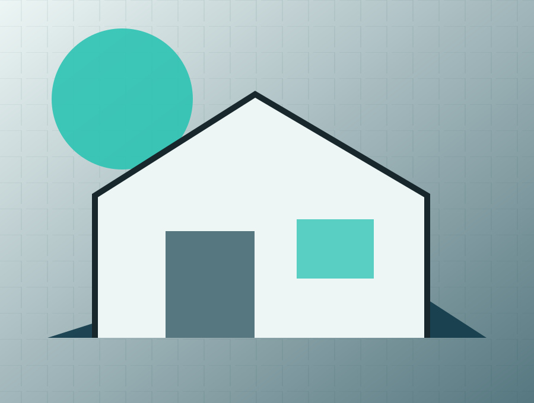

Telekkeresés
Hogyan segítünk telket találni, beépíthetőséget vizsgálni, HÉSZ-t elemezni.
Telektől a bútorozott átadásig egyetlen felelős projektút. A szolgáltatások oldal célja, hogy a látogató egyértelmű szempontokkal jusson el a következő megalapozott döntésig.
Kattints és költözz!
Drive-forráshoz igazított tesztoldal · publikálás nélkül
Telektől a bútorozott átadásig egyetlen felelős projektút.
Hogyan segítünk telket találni, beépíthetőséget vizsgálni, HÉSZ-t elemezni.
Teljes tervezés, hatósági engedélyezés, építész és mérnök koordináció.
Liapor, Leier, tégla, faváz – összehasonlítás, fix ár, fix határidő, minőségbiztosítás.
Egyedi belső terek, moodboardok, kert‑ és wellness tervezés.
Takarítás, költöztetés, karbantartási emlékeztetők.
CTA: "Kérem egy kézben a projektet".
A preview nem küld adatot és nem tesz ajánlatot. Ár, határidő, garancia vagy szerződéses vállalás csak jóváhagyott evidence- és ajánlati rekord alapján jelenhet meg élesben.